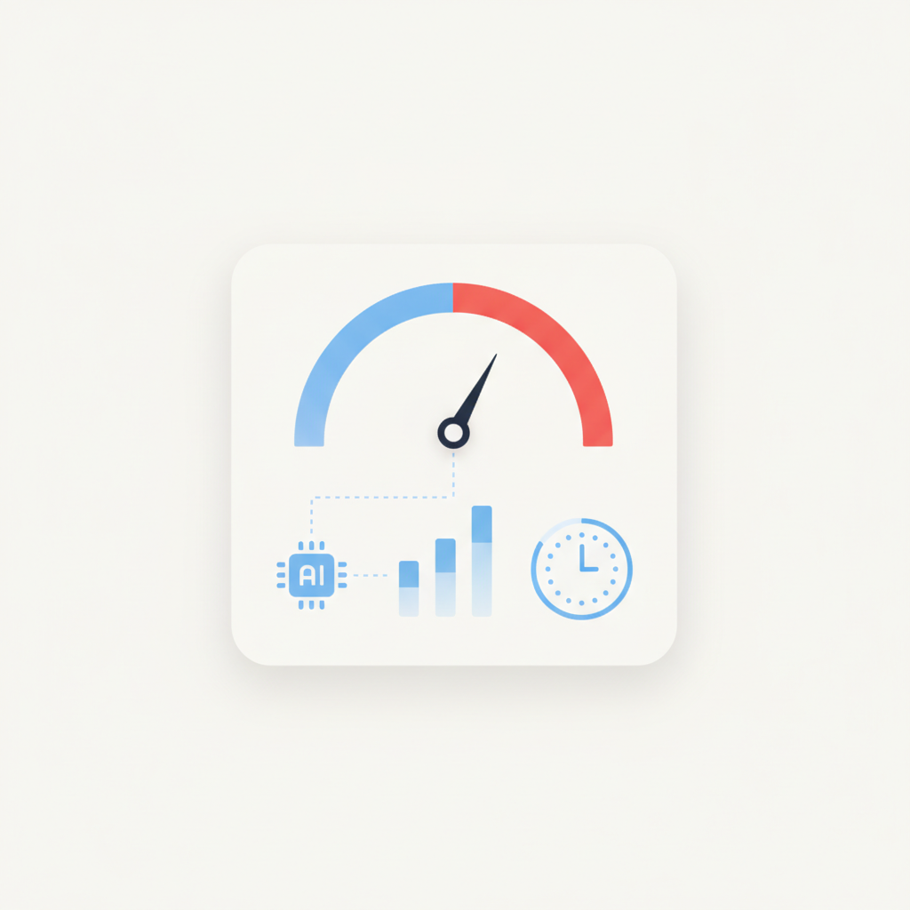
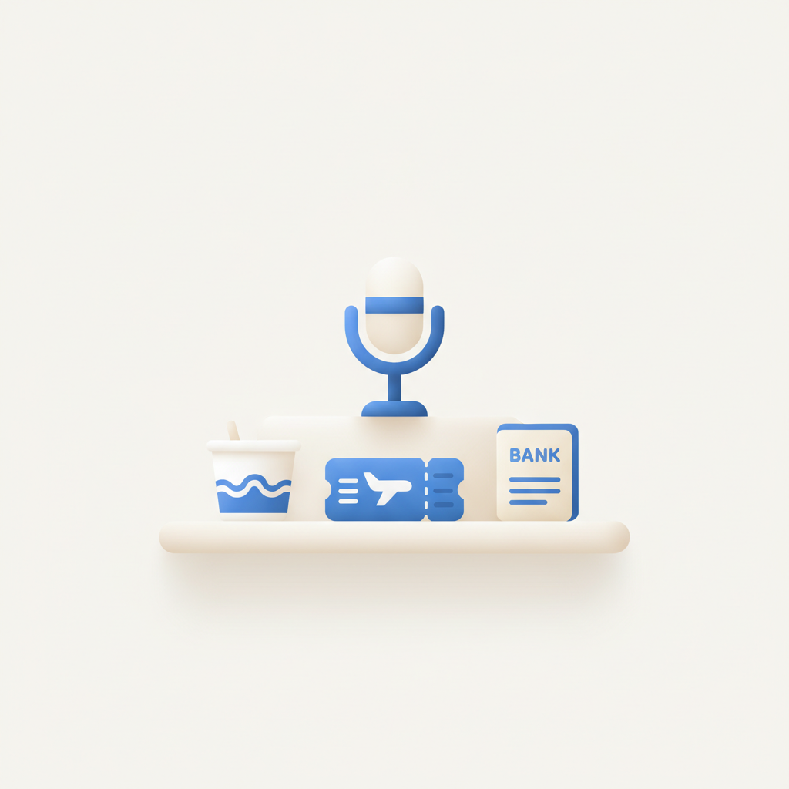
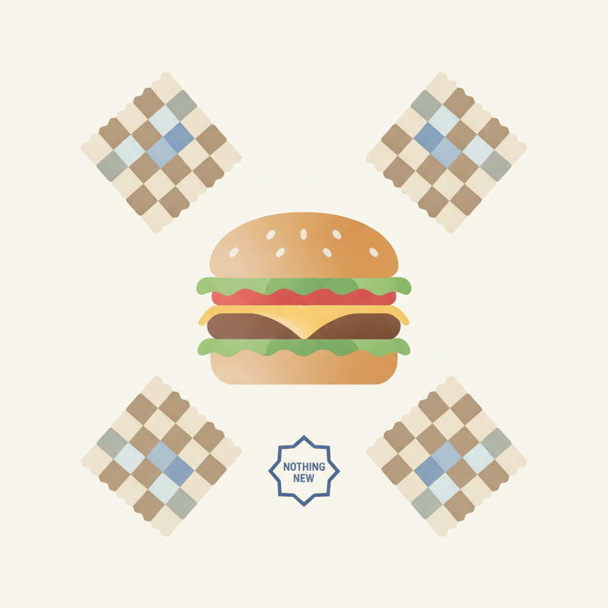
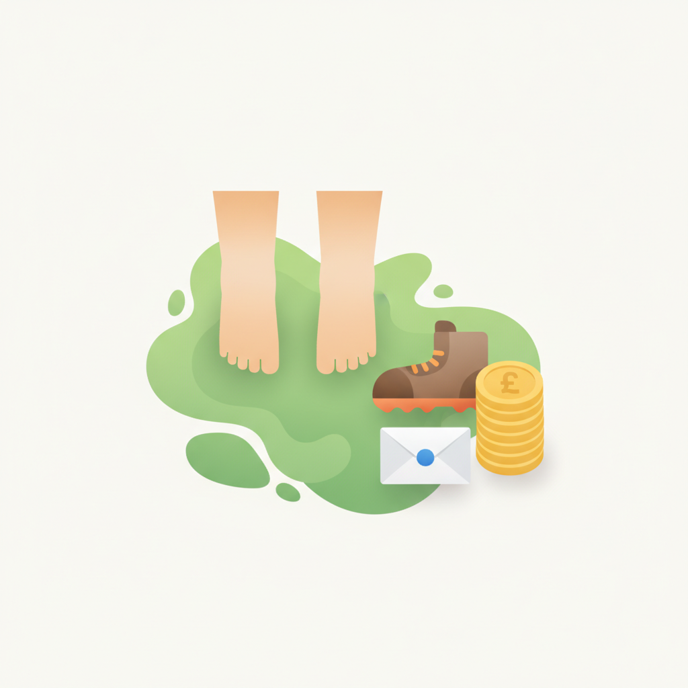

안녕하세요! 목요일 마케팅 소식 전해드립니다 😊 오늘은 파이브가이즈 이야기가 특히 와닿습니다. 메뉴도, 인테리어도, 운영 방식도 일절 바꾸지 않는다는 원칙 하나로 멀리서도 찾아오는 팬을 만들어낸 이 브랜드는, 변화와 혁신이 곧 성장이라는 공식이 당연하게 통용되는 시장에서 정반대의 방향을 택한 사례입니다. 새로운 것을 더하는 것보다 지키는 것이 더 어려울 수 있고, 그 일관성이 쌓일 때 신뢰가 된다는 점을 다시 확인하게 됩니다.
이케아 코리아가 크리에이터 '자취남'을 브랜드 앰배서더로 선정한 것도 같은 맥락에서 읽힙니다. 1,700곳 이상의 집을 직접 방문해 공간 콘텐츠를 쌓아온 크리에이터를 선택했다는 것은, 팔로워 수나 화제성보다 콘텐츠의 깊이와 축적된 신뢰를 기준으로 삼았다는 뜻입니다. 브랜드가 내보내는 메시지보다 그 브랜드와 오랫동안 같은 언어를 써온 사람이 훨씬 강한 맥락을 만들 수 있다는 것, 앰배서더 선정의 기준이 어디에 있어야 하는지를 잘 보여주는 사례입니다.
이번 주도 절반을 넘긴 목요일 아침, 오늘 하루도 좋은 인사이트로 힘차게 시작하세요! 💪
종합몰 앱 상위 5위 안에 중국 직구 앱 진입
와이즈앱·리테일 분석 결과, 모든 연령대의 종합몰 앱 상위 5개 안에 알리익스프레스·테무 등 중국 직구 앱이 1개 이상 포함됐다. 40대를 제외한 전 연령에서 두 앱이 나란히 5위 안에 들었고, 10대 이하에서는 쉬인까지 4위에 올랐다. 국내 이커머스 마케터 입장에서는 중국 직구 플랫폼이 주요 경쟁자로 확고히 자리 잡은 현실을 직시하고 가격·경험 차별화 전략을 재점검할 필요가 있다.
›
2CMO 74% ROI 입증 압박…NIQ 'AI 네이티브 의사결정' 촉구
닐슨아이큐(NIQ)는 CMO의 74%가 ROI 입증 압박을 받고 있지만 실시간 정보를 확보하는 경우는 드물다고 밝혔다. NIQ는 캠페인 종료 후 분석하는 기존 방식에서 벗어나, AI가 데이터를 지속 분석해 다음 판단을 돕는 'AI 네이티브 의사결정 시스템'으로 전환이 필요하다고 제안했다. 마케터는 사후 보고 중심의 측정 체계를 실시간 AI 기반으로 고도화하는 방향을 검토해야 할 시점이다.
› 3WPP, AI 기반 광고 제작 자동화 '프로덕션 스튜디오' 공개
WPP가 텍스트·이미지·영상 등 광고 콘텐츠 제작을 자동화하는 'AI 프로덕션 스튜디오'를 공개했다. 엔비디아 옴니버스 기반으로 3D 모델 제작부터 매체별 소재 수정까지 하나의 시스템에서 처리하며, 포드·로레알이 12개월간 시범 운영 후 전 고객에게 개방됐다. 글로벌 대형 에이전시가 AI 기반 제작 자동화를 본격화함에 따라 광고 제작 비용 구조와 프로세스 전반의 변화가 예상된다.
›
4삼양·트립닷컴·하나은행의 '판 바꾸는' 마케팅 전략
칸라이언즈서울 2026 마케터스 아카데미에서 삼양식품·트립닷컴·하나은행·산토리가 기존 시장 문법을 뒤집은 마케팅 사례를 공유했다. 효율과 확장을 강조하는 시대에 오히려 브랜드 고유의 자산과 관계를 깊이 들여다보고 이를 새로운 경쟁력으로 전환한 전략이 주목받았다. 차별화가 어려운 카테고리에서 브랜드 본유의 스토리와 자산을 재발굴하는 접근이 유효한 대안임을 확인할 수 있다.
›
5파이브가이즈가 팬을 만드는 법: '아무것도 바꾸지 않는' 브랜드 전략
파이브가이즈는 메뉴·인테리어·운영 방식을 일절 바꾸지 않는 원칙으로 멀리서도 찾아오는 충성 팬을 만들어냈다. 새로움보다 일관성이 브랜드 신뢰와 팬덤의 근거가 될 수 있다는 사례로, 지속적인 신제품·프로모션 중심 운영에 익숙한 마케터에게 '변하지 않는 것'의 경쟁력을 재고하게 한다.
› 6이케아 코리아, 크리에이터 '자취남' 브랜드 앰배서더 선정
이케아 코리아가 1700곳 이상의 집을 방문해 공간·인테리어 콘텐츠를 소개해온 라이프스타일 크리에이터 '자취남'을 브랜드 앰배서더로 선정했다. 폭넓은 연령대의 구독자를 보유한 자취남의 실생활 밀착 콘텐츠가 이케아의 홈퍼니싱 브랜드 메시지와 자연스럽게 연결된다는 점이 선정 이유로 꼽힌다. 제품 중심이 아닌 생활 맥락 중심의 크리에이터 협업이 브랜드 친밀감 제고에 효과적임을 보여주는 사례다.
›
7컬럼비아, 등산 발 사진 보내면 현금 지급하는 이색 캠페인
컬럼비아 스포츠웨어가 신제품 하이킹화 '피크프릭' 출시에 맞춰 야외에서 찍은 맨발 사진을 보내면 135파운드를 지급하는 'F££T FUND' 캠페인을 선보였다. 온라인에서 발 사진을 판매하는 문화를 재치 있게 비틀어 제품 성능(발 보호·편안함)을 간접적으로 증명하는 방식이다. 소비자 참여를 유도하면서 제품 핵심 편익을 자연스럽게 전달하는 캠페인 설계 방식으로 참고할 만하다.
›

브랜드 진단부터 지금 당장 해야 할 우선순위까지,
30분 무료 상담에서 함께 정리해드려요.
이미 수십 개 브랜드가 상담받았습니다.
내 브랜드처럼, 함께 고민하는 팀원의 마음으로 봅니다.
스타트업 대표·마케팅 담당자를 위한 30분